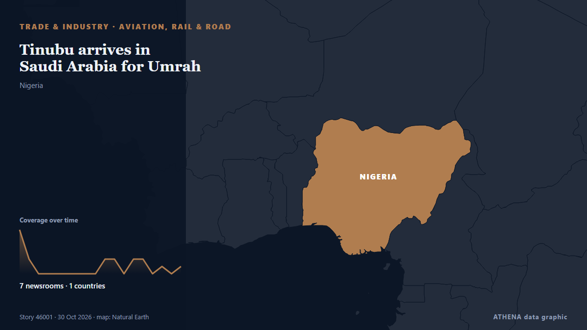

Aérien, rail et route
| 18 oct. | 0 |
|---|---|
| 19 oct. | 0 |
| 20 oct. | 0 |
| 21 oct. | 0 |
| 22 oct. | 1 |
| 23 oct. | 0 |
| 24 oct. | 0 |
| 25 oct. | 0 |
| 26 oct. | 4 |
| 27 oct. | 3 |
| 28 oct. | 7 |
| 29 oct. | 2 |
| 30 oct. | 6 |
| 31 oct. | 1 |
Les titres sont affichés en anglais, tels que publiés.

Tinubu arrives in Saudi Arabia for Umrah
Before leaving, President Tinubu is expected to inaugurate some equipment acquired by the Nigerian Air Force for its operations. de Channels TV
Ryanair responds to Kumar Sangakkara’s allegation
Ryanair has responded to Sri Lankan cricket legend Kumar Sangakkara, who accused the airline, following an incident involving the airline’s gate staff at Dublin Airport. de Daily Mirror
Pres. Pezeshkian condoles Spain over deadly train collision
Emergency services combed through the wreckage at night to find further victims. de The Straits Times
US orders non-emergency staff to leave Saudi Arabia over security risks
Oct 30 (Reuters) - The United States ordered non-emergency government employees and their family members to leave Saudi Arabia effective October 23 due to safety risks, the US embassy in Riyadh said… de Al-Monitor
Russian citizen faces spying charges in Poland after photographing railways
The suspect was arrested while taking pictures at an unguarded railway crossing. de Politico Europe
As US airlines deploy AI pricing tools, startups help travelers cash in on fare drops
This approach contrasts with other major US carriers, who do not engage in such practices. de Simple Flying
Airline groups urge US CDC to reconsider Ebola declaration requirements
WASHINGTON, Oct 28 - Major American and foreign airlines urged the US Centers for Disease Control and Prevention to reconsider new rules requiring all US-bound travelers to attest they have not been… de The Straits Times
Sydney's south-west Metro line opens
The wait for south-west Sydney commuters is over, with today's opening of the Metro rail line. de Sydney Morning Herald
“CHOGM 2026 is our moment to shape what comes next” – Commonwealth Secretary-General
World leaders will gather in St John’s, Antigua and Barbuda next week for the 28th Commonwealth Heads of Government Meeting (CHOGM) with a call to accelerate partnerships and investment in the… de Post-Courier (PNG)
Bolsonaro's escape to the US: How it happened
FLAVIO Bolsonaro’s clandestine escape to the United States bewildered Brazil and triggered a frantic search for his whereabouts. de New Straits Times
US-EU trade truce at risk over $3.4 billion Airbus loan, Trump official warns
US Trade Representative Jamieson Greer warned on Monday that a $3.4 billion European Investment Bank loan to Airbus could jeopardise a tariff truce between Washington and Brussels. de France 24 English
Sydney’s New International Airport Opens to Passengers
Sydney’s second airport is named after the first Australian woman licensed to fly paying passengers. de ABC News Australia
Pakistan bars Taiwanese airlines from its airspace in line with One-China policy: report
Pakistan has barred Taiwanese airlines from using its airspace in support of Beijing’s One-China policy, becoming the first country to take such a step, Bloomberg reported on Wednesday. de Dawn
Japan hotline offers emotional support in Spanish, Portuguese
For people overwhelmed by distress or a sense of helplessness, being able to talk anonymously to someone who will simply listen ca. de Mainichi (English)
Passenger who allegedly sent hijack text on United Airlines Vegas flight claims it was 'banter'
Dante Milne, 25, was arrested after allegedly sending a message onboard a United Airlines flight from Las Vegas to Newark that read: "I'm gonna hijack this b**** and crash ur row only" de Chronicle Live (Newcastle)
Horror as EasyJet flight to Glasgow reports 'mass vomiting' among passengers
The horrific event caused cabin crew to alert ground control after several passengers became unwell. de WalesOnline
Belarus, Uzbekistan’s Tashkent Region seek to expand interregional cooperation
Jeonbuk National University has opened an international center in Uzbekistan to help Uzbek students pursue degrees in Korea and expand academic ties with universities in Central Asia, the university… de Korea Herald
'Sickness reports' on board easyJet flight with passengers feeling unwell
At least eight people were reported to have been taken ill on the overnight service from Egypt to Glasgow. de Irish Mirror